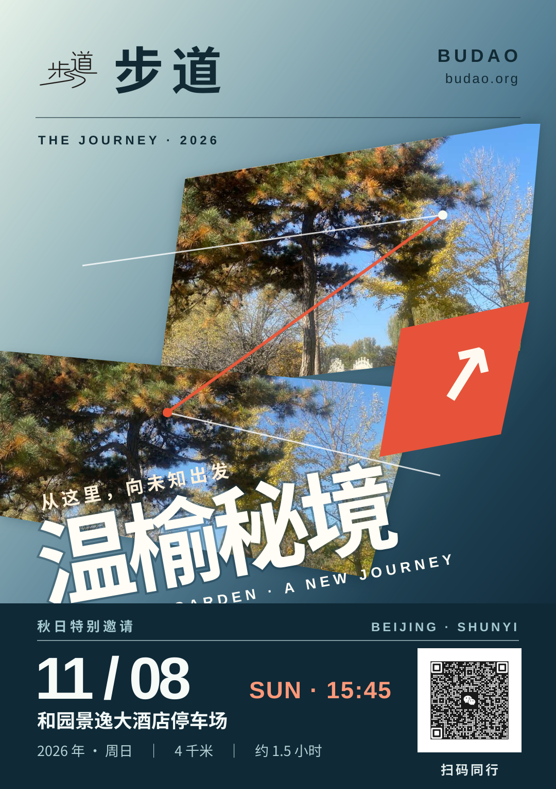

原作 · Porsche Rennsport Reunion IV2011 · Dennis Simon

外部图片暂时无法显示。请打开 RM Sotheby's 原始图像。
原创 · 步道「逐梦·动势」温榆秘境 · V2

① 品牌露出步道标志、中文名及英文品牌首先进入视线，对应 Porsche 顶部的明确署名。
② 之字形行进同一张照片进行两次不同裁切，远近错位；以 Z 型细路径形成空间动势。
③ 非水平排版活动名与场景行动方向保持一致，整体向上倾斜，而不是横向标语贴片。
④ 渐变色底天空青蓝渐进深湖绿与墨蓝，托起图像，并让底部信息有清晰反差。
⑤ 醒目点唯一高饱和橙朱色箭头成为视觉锚点，避免数字、线条、标签争夺注意力。
技术边界：仅创建独立审美验收页面；没有修改 Tent 发布逻辑及正式请柬系统。本页照片、标识与二维码来自当前真实路线资源，并已内嵌进页面，避免以往预览图失效。保时捷原作来自外部收藏资料网站，不纳入我们的模板素材库。原版参考出处